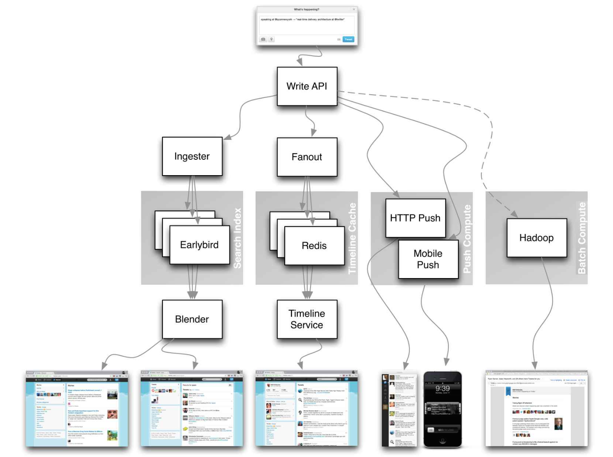

Appendix
You'll sometimes be asked to do 'back-of-the-envelope' estimates. For example, you might need to determine how long it will take to generate 100 image thumbnails from disk or how much memory a data structure will take. The Powers of two table and Latency numbers every programmer should know are handy references.
Powers of two table
Power Exact Value Approx Value Bytes
---------------------------------------------------------------
7 128
8 256
10 1024 1 thousand 1 KB
16 65,536 64 KB
20 1,048,576 1 million 1 MB
30 1,073,741,824 1 billion 1 GB
32 4,294,967,296 4 GB
40 1,099,511,627,776 1 trillion 1 TBSource(s) and further reading
Latency numbers every programmer should know
Latency Comparison Numbers
--------------------------
L1 cache reference 0.5 ns
Branch mispredict 5 ns
L2 cache reference 7 ns 14x L1 cache
Mutex lock/unlock 25 ns
Main memory reference 100 ns 20x L2 cache, 200x L1 cache
Compress 1K bytes with Zippy 10,000 ns 10 us
Send 1 KB bytes over 1 Gbps network 10,000 ns 10 us
Read 4 KB randomly from SSD 150,000 ns 150 us ~1GB/sec SSD
Read 1 MB sequentially from memory 250,000 ns 250 us
Round trip within same datacenter 500,000 ns 500 us
Read 1 MB sequentially from SSD 1,000,000 ns 1,000 us 1 ms ~1GB/sec SSD, 4X memory
HDD seek 10,000,000 ns 10,000 us 10 ms 20x datacenter roundtrip
Read 1 MB sequentially from 1 Gbps 10,000,000 ns 10,000 us 10 ms 40x memory, 10X SSD
Read 1 MB sequentially from HDD 30,000,000 ns 30,000 us 30 ms 120x memory, 30X SSD
Send packet CA->Netherlands->CA 150,000,000 ns 150,000 us 150 msNotes
-----
1 ns = 10^-9 seconds
1 us = 10^-6 seconds = 1,000 ns
1 ms = 10^-3 seconds = 1,000 us = 1,000,000 ns
Handy metrics based on numbers above:
Read sequentially from HDD at 30 MB/s
Read sequentially from 1 Gbps Ethernet at 100 MB/s
Read sequentially from SSD at 1 GB/s
Read sequentially from main memory at 4 GB/s
6-7 world-wide round trips per second
2,000 round trips per second within a data center
Latency numbers visualized
Source(s) and further reading
Latency numbers every programmer should know - 1
Latency numbers every programmer should know - 2
Designs, lessons, and advice from building large distributed systems
Software Engineering Advice from Building Large-Scale Distributed Systems
Additional system design interview questions
> Common system design interview questions, with links to resources on how to solve each.
| Question | Reference(s) |
|---|---|
| Design a file sync service like Dropbox | youtube.com |
| Design a search engine like Google | queue.acm.org
stackexchange.com
ardendertat.com
stanford.edu |
| Design a scalable web crawler like Google | quora.com |
| Design Google docs | code.google.com
neil.fraser.name |
| Design a key-value store like Redis | codecapsule.com
allthingsdistributed.com |
| Design a cache system like Memcached | slideshare.net |
| Design a recommendation system like Amazon's | hulu.com
ijcai13.org |
| Design a tinyurl system like Bitly | n00tc0d3r.blogspot.com |
| Design a chat app like WhatsApp | highscalability.com
| Design a picture sharing system like Instagram | highscalability.com
highscalability.com |
| Design the Facebook news feed function | quora.com
quora.com
slideshare.net |
| Design the Facebook timeline function | facebook.com
highscalability.com |
| Design the Facebook chat function | erlang-factory.com
facebook.com |
| Design a graph search function like Facebook's | facebook.com
facebook.com
facebook.com |
| Design a content delivery network like CloudFlare | figshare.com |
| Design a trending topic system like Twitter's | michael-noll.com
snikolov .wordpress.com |
| Design a random ID generation system | blog.twitter.com
github.com |
| Return the top k requests during a time interval | cs.ucsb.edu
wpi.edu |
| Design a system that serves data from multiple data centers | highscalability.com |
| Design an online multiplayer card game | indieflashblog.com
buildnewgames.com |
| Design a garbage collection system | stuffwithstuff.com
washington.edu |
| Design an API rate limiter | https://stripe.com/blog/ |
| Design a Stock Exchange (like NASDAQ or Binance) | Jane Street
Golang Implementation
Go Implementation |
| Add a system design question | Contribute |
Real world architectures
> Articles on how real world systems are designed.

Source: Twitter timelines at scale
Don't focus on nitty gritty details for the following articles, instead:
Identify shared principles, common technologies, and patterns within these articles
Study what problems are solved by each component, where it works, where it doesn't
Review the lessons learned
|Type | System | Reference(s) |
|---|---|---|
| Data processing | MapReduce - Distributed data processing from Google | research.google.com |
| Data processing | Spark - Distributed data processing from Databricks | slideshare.net |
| Data processing | Storm - Distributed data processing from Twitter | slideshare.net |
| | | |
| Data store | Bigtable - Distributed column-oriented database from Google | harvard.edu |
| Data store | HBase - Open source implementation of Bigtable | slideshare.net |
| Data store | Cassandra - Distributed column-oriented database from Facebook | slideshare.net
| Data store | DynamoDB - Document-oriented database from Amazon | harvard.edu |
| Data store | MongoDB - Document-oriented database | slideshare.net |
| Data store | Spanner - Globally-distributed database from Google | research.google.com |
| Data store | Memcached - Distributed memory caching system | slideshare.net |
| Data store | Redis - Distributed memory caching system with persistence and value types | slideshare.net |
| | | |
| File system | Google File System (GFS) - Distributed file system | research.google.com |
| File system | Hadoop File System (HDFS) - Open source implementation of GFS | apache.org |
| | | |
| Misc | Chubby - Lock service for loosely-coupled distributed systems from Google | research.google.com |
| Misc | Dapper - Distributed systems tracing infrastructure | research.google.com
| Misc | Kafka - Pub/sub message queue from LinkedIn | slideshare.net |
| Misc | Zookeeper - Centralized infrastructure and services enabling synchronization | slideshare.net |
| | Add an architecture | Contribute |
Company architectures
| Company | Reference(s) |
|---|---|
| Amazon | Amazon architecture |
| Cinchcast | Producing 1,500 hours of audio every day |
| DataSift | Realtime datamining At 120,000 tweets per second |
| Dropbox | How we've scaled Dropbox |
| ESPN | Operating At 100,000 duh nuh nuhs per second |
| Google | Google architecture |
| Instagram | 14 million users, terabytes of photos
What powers Instagram |
| Justin.tv | Justin.Tv's live video broadcasting architecture |
| Facebook | Scaling memcached at Facebook
TAO: Facebook’s distributed data store for the social graph
Facebook’s photo storage
How Facebook Live Streams To 800,000 Simultaneous Viewers |
| Flickr | Flickr architecture |
| Mailbox | From 0 to one million users in 6 weeks |
| Netflix | A 360 Degree View Of The Entire Netflix Stack
Netflix: What Happens When You Press Play? |
| Pinterest | From 0 To 10s of billions of page views a month
18 million visitors, 10x growth, 12 employees |
| Playfish | 50 million monthly users and growing |
| PlentyOfFish | PlentyOfFish architecture |
| Salesforce | How they handle 1.3 billion transactions a day |
| Stack Overflow | Stack Overflow architecture |
| TripAdvisor | 40M visitors, 200M dynamic page views, 30TB data |
| Tumblr | 15 billion page views a month |
| Twitter | Making Twitter 10000 percent faster
Storing 250 million tweets a day using MySQL
150M active users, 300K QPS, a 22 MB/S firehose
Timelines at scale
Big and small data at Twitter
Operations at Twitter: scaling beyond 100 million users
How Twitter Handles 3,000 Images Per Second |
| Uber | How Uber scales their real-time market platform
Lessons Learned From Scaling Uber To 2000 Engineers, 1000 Services, And 8000 Git Repositories |
| WhatsApp | The WhatsApp architecture Facebook bought for $19 billion |
| YouTube | YouTube scalability
YouTube architecture |
Company engineering blogs
> Architectures for companies you are interviewing with.
>
> Questions you encounter might be from the same domain.
Airbnb Engineering
Atlassian Developers
AWS Blog
Bitly Engineering Blog
Box Blogs
Cloudera Developer Blog
Dropbox Tech Blog
Engineering at Quora
Ebay Tech Blog
Evernote Tech Blog
Etsy Code as Craft
Facebook Engineering
Flickr Code
Foursquare Engineering Blog
GitHub Engineering Blog
Google Research Blog
Groupon Engineering Blog
Heroku Engineering Blog
Hubspot Engineering Blog
High Scalability
Instagram Engineering
Intel Software Blog
Jane Street Tech Blog
LinkedIn Engineering
Microsoft Engineering
Microsoft Python Engineering
Netflix Tech Blog
Paypal Developer Blog
Pinterest Engineering Blog
Reddit Blog
Salesforce Engineering Blog
Slack Engineering Blog
Spotify Labs
Stripe Engineering Blog
Twilio Engineering Blog
Twitter Engineering
Uber Engineering Blog
Yahoo Engineering Blog
Yelp Engineering Blog
Zynga Engineering Blog
Source(s) and further reading
Looking to add a blog? To avoid duplicating work, consider adding your company blog to the following repo: